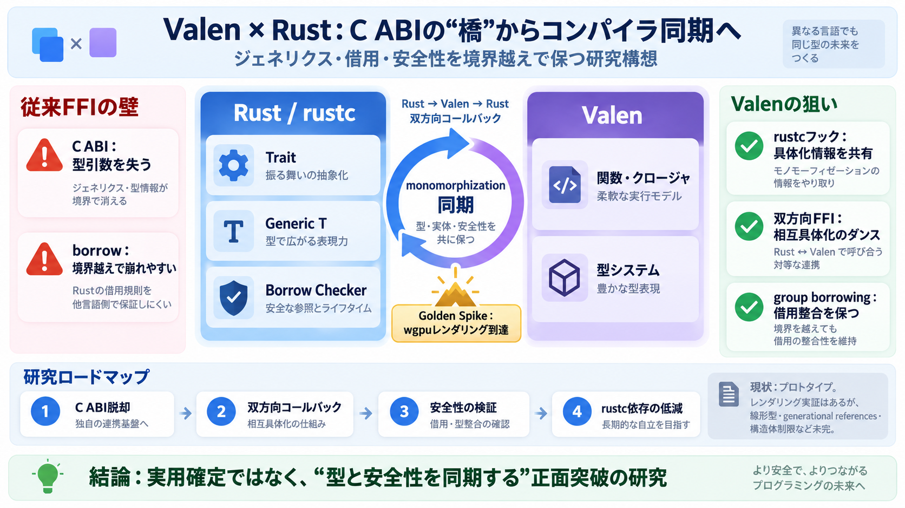

Evan Ovadia
The Link Between Generics, Compile Times, Type-Erasure, Cloud Building, and Hot-Code Reloading What Vale Taught Me Abou…

FFIの「橋」ではなく、コンパイラ連携で“型と安全性”を一体化する構想――C ABI依存を超えるための道筋。
Rustは安定ABIを持たないため、通常は extern "C" / repr(C) でC境界に逃がす必要がある。だがC境界は“ジェネリクスと借用”をそのまま受け渡せない。
Valenの狙いは、C経由の翻訳ではなく、Rust側の monomorphization（具体化）と噛み合う形で接続点を作ることだ。
象徴として、最初の接続がレンダリング到達（wgpuベース Glass Domino）までつながった、という“Golden Spike”の例えが置かれている。
Valenは単に rustc を呼ぶだけでなく、rustc内部（monomorphizer等）と通信するためにコールバックを追加する“核対応”を行う。
Valenは「RustがValenのクロージャ／関数を要求し、さらにその先がRustから呼ばれる」まで扱う。ここで必要になるのが“モノモルフィゼーションのダンス”だ。
Valenはこの順に“橋渡し”ではなく“同期”で成立させようとしている。
最初の実行例として、Rustの wgpu ベースライブラリ（Glass Domino）からレンダリングまで到達したとされる。
従来FFIは“呼び出し規約の翻訳”になりがちだが、Valenは“ジェネリクス具体化の流れ”に寄せることで、型と実装を同期させる。
FFI境界で崩れやすいborrow整合を、Valenはgroup borrowingを核にして“境界越えでも成立させる”方向で設計している。
bilingual: group borrowing（グループ借用）
現状の到達点は「ほぼ動くが、未完が残る」。例えば線形型・generational references・ゼロサイズ以外の構造体が制約になる。
“どの型引数で具体化するか”の責務が片側だけでは決まらない。Valenは、必要な具体化先を提示することで“相互モノモルフィゼーション”を成立させようとする。
bilingual: prototype（プロトタイプ）
成功が“確信”ではなく“困難の所在と試行の証拠”として評価される段階である、という見立てもある。
ValenはC ABI依存から離れ、rustcの具体化と同期し、双方向コールバックとgroup borrowingで安全性へ寄せようとしている。現状は未完が多いが、長期的に統合へ影響しうる“正面突破の研究”である。
The Link Between Generics, Compile Times, Type-Erasure, Cloud Building, and Hot-Code Reloading What Vale Taught Me Abou…
Single Ownership and Memory Safety without Borrow Checking, RC, or GC The Link Between Generics, Compile Times, Type-Er…
Copyright © 2022 Evan Ovadia - Previously known as GelLLVM (Not to be confused with Project Everest's VALE: Verified As…
Logo of the company Facebook that links directly to the LeadIQ Facebook page.Logo of the company Twitter that links dire…
Logo of the company Facebook that links directly to the LeadIQ Facebook page.Logo of the company Twitter that links dire…